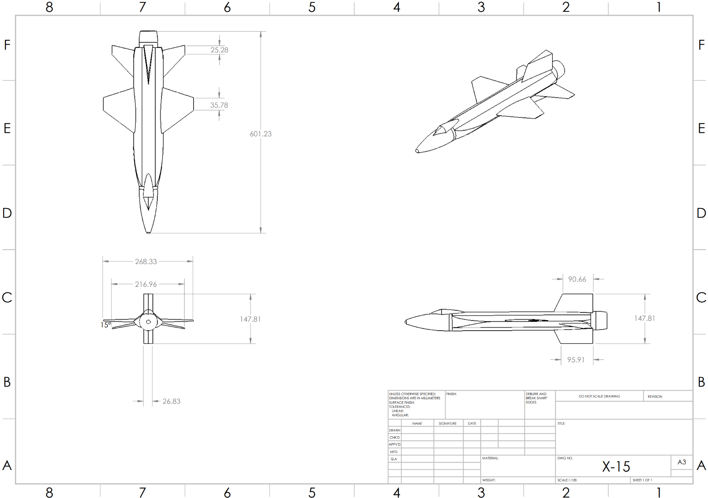
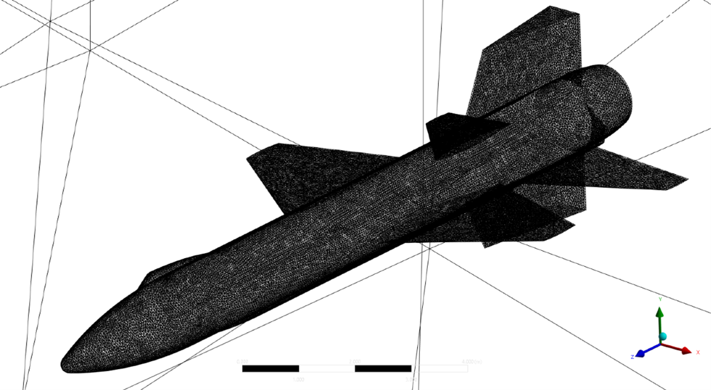
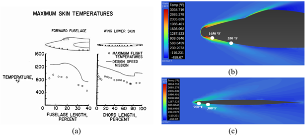

Overview
Translated historical X-15 mission requirements into technical specifications to develop an accurate SolidWorks airframe model, then performed a Mach 8 thermal-structural analysis to evaluate temperature-driven constraints and verify 1960s-era design limits. Presented findings as a mission briefing that correlated modern computational results with historical flight context for public exhibition.
Photos
Design


Analysis



Technical Presentation
Mission-level findings were presented in a formal briefing that correlated modern computational results with historical X-15 flight data for public exhibition.
View Full Presentation (PDF)My Role
- Translated historical mission requirements into technical specifications and built a SolidWorks airframe model with 98% geometric accuracy
- Performed Mach 8 thermal-structural analysis using ANSYS within a ±5% accuracy window to evaluate temperature contours and structural response
- Delivered a mission briefing that correlated modern computational results with historical flight data for a nationally recognized public exhibit
Tools Used
SolidWorks ANSYS Spacecraft Design Research Verification Systems Engineering Technical PresentationsKey Results
- Developed an X-15 SolidWorks airframe model with 98% geometric accuracy based on historical requirements
- Verified thermal performance limits at Mach 8 using ANSYS thermal-structural analysis within ±5% accuracy window
- Presented mission-level findings by correlating computational outputs with historical flight data for public exhibition